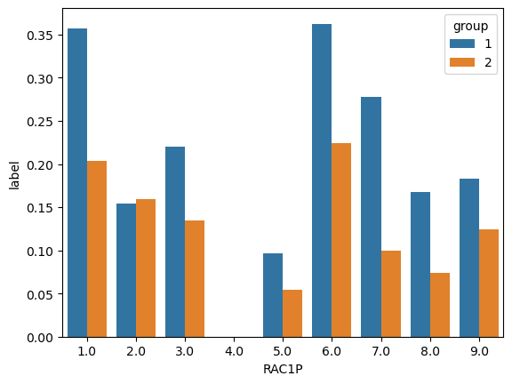
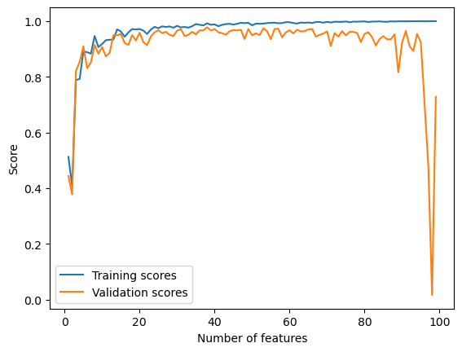
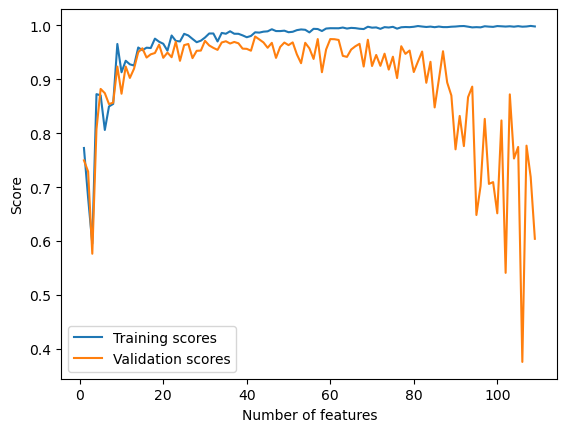
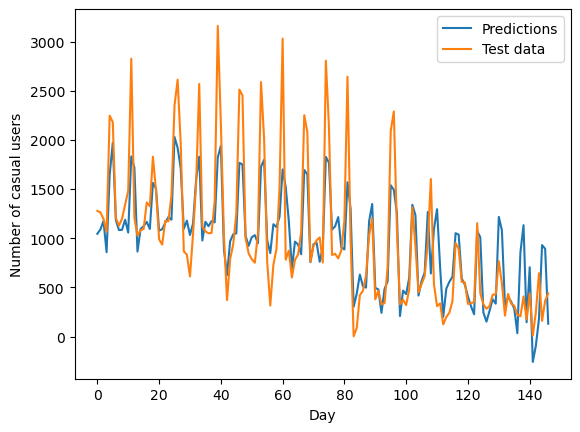

I would like to predict whether an individual’s income is over $50K based on all the variables in possible_features except for sex. I will create a feature matrix, a label vector, and a group label vector using the relevant variables, and split them into training data and test data.
features_to_use = [f for f in possible_features if f notin ["PINCP", "SEX"]]IncomeProblem = BasicProblem( features=features_to_use, target='PINCP', target_transform=lambda x: (x >50000) *1, # transform income variable into binary category group='SEX', preprocess=lambda x: x, postprocess=lambda x: np.nan_to_num(x, -1),)features, label, group = IncomeProblem.df_to_numpy(acs_data)# train-test splitfrom sklearn.model_selection import train_test_splitX_train, X_test, y_train, y_test, group_train, group_test = train_test_split( features, label, group, test_size=0.2, random_state=0)
Basic Descriptives
Before training any models, I will first explore the basic descriptives of the dataset.
49,135 of these individuals are male and 50,870 are female.
df.groupby("group")["label"].mean().reset_index()
group
label
0
1
0.326712
1
2
0.193611
Around 32.7% of male individuals in the dataset has income over 50k dollars, but only 19.4% of women has income over $50k.
import seaborn as snsproportions = df.groupby(["group", "RAC1P"])["label"].mean().reset_index()ax = sns.barplot(data = proportions, x ="RAC1P", y ="label", hue ="group")

It seems that for almost all race groups, the proportion of men with income over $50k is greater than that of women. The only exception is African Americans, for whom this proportion doesn’t differ very much across sex.
Training the model
I choose to use a logistic regression model with polynomial features for my prediction. I will use cross-validation to find out the best polynomial degree for the model.
from sklearn.linear_model import LogisticRegressionfrom sklearn.preprocessing import PolynomialFeaturesfrom sklearn.pipeline import Pipeline# create a pipeline that computes polynomial features and passes them to logistic regression# source: CS0451 features regulation lecture codedef poly_LR(degree, **kwargs): plr = Pipeline([("poly", PolynomialFeatures(degree = degree)), ("LR", LogisticRegression(max_iter =1000, **kwargs))])return plr
from sklearn.svm import SVCSVC_ = SVC(gamma =0.1)SVC_.fit(X_train, y_train)
from sklearn.model_selection import cross_val_scorefrom warnings import simplefilterfrom sklearn.exceptions import ConvergenceWarningsimplefilter("ignore", category=ConvergenceWarning)from sklearn.svm import SVCcv_max =0best_gamma =0cvs = []for g in np.float_power(10, np.arange(-5, 5)):# fit model SVC_ = SVC(gamma = g) SVC_.fit(X_train, y_train)# cross-validation cv_scores = cross_val_score(SVC_, X_train, y_train, cv =5) cv_mean = cv_scores.mean() cvs.append(cv_mean)# update best cv score and best degreeif cv_mean > cv_max: cv_max = cv_mean best_gamma = gcv_max, best_gamma# draw a line chart for cv scores at varying degrees#import matplotlib.pyplot as plt#fig = plt.plot(range(1,5), cvs)
# generate datan_train =100n_val =100noise =0.2train_scores = []val_scores = []# increase p_features from 1 to n_train-1 and calculate training and validation scores for eachfor p_features in np.arange(1, n_train): # create data X_train, y_train, X_val, y_val = LR_data(n_train, n_val, p_features, noise) LR = LinearRegression() LR.fit(X_train, y_train) train_scores.append(LR.score(X_train, y_train)) val_scores.append(LR.score(X_val, y_val))# plotplt.plot(np.arange(1, n_train), train_scores, label ="Training scores")# plotplt.plot(np.arange(1, n_train), val_scores, label ="Validation scores")xlab = plt.xlabel("Number of features")ylab = plt.ylabel("Score")legend = plt.legend()

We can observe from the chart that the training score increased all the way to 1.0 as the number of features increases. The validation score, however, has been fluctuating and forms a slightly downward trend, and dramatically decreased to almost 0 when the number of features reached ~99.
This is a demonstration of overfitting. With too many features, the model becomes increasingly accurate in describing the trend in the training data, but at the same time takes into account more noise from the training data that doesn’t generate to the rest of the data. As a result, validation scores decrease.
LASSO regularization
To fix overfitting, I experiment with LASSO regularization:
from sklearn.linear_model import Lasso# generate datan_train =100n_val =100noise =0.2train_scores = []val_scores = []# increase p_features from 1 to n_train-1 and calculate training and validation scores for eachfor p_features in np.arange(1, n_train +10): # create data X_train, y_train, X_val, y_val = LR_data(n_train, n_val, p_features, noise) L = Lasso(alpha =0.001) L.fit(X_train, y_train) train_scores.append(L.score(X_train, y_train)) val_scores.append(L.score(X_val, y_val))# plotplt.plot(np.arange(1, n_train +10), train_scores, label ="Training scores")plt.plot(np.arange(1, n_train +10), val_scores, label ="Validation scores")xlab = plt.xlabel("Number of features")ylab = plt.ylabel("Score")legend = plt.legend()

Using LASSO regularization, the validation scores still drops as the number of features increases, but there is no dramatical decrease as the number of features approaches, or even exceeds the number of data points. This is because LASSO is able to force entries of the weight vector to zero, which can help eliminate the effect of features that act as noise to the model.
Bikeshare data set
In this section, I train my linear regression model to a bikeshare data set.
# plot the number of casual users over timefig, ax = plt.subplots(1, figsize = (7, 3))ax.plot(pd.to_datetime(bikeshare['dteday']), bikeshare['casual'])ax.set(xlabel ="Day", ylabel ="# of casual users")l = plt.tight_layout()
# fit and score the modelLR = LinearRegression()LR.fit(X_train, y_train)LR.score(X_train, y_train)
0.7318355359284503
The model has a score of 0.73.
# compute predictions and visualize in comparison to actual test datay_hat = LR.predict(X_test)plt.plot(np.arange(len(y_hat)), y_hat, label ="Predictions")plt.plot(np.arange(len(y_hat)), y_test, label ="Test data")xlab = plt.xlabel("Day")ylab = plt.ylabel("Number of casual users")legend = plt.legend()

It seems that the model does a good job in predicting the general trend in the data – the overall decreasing number of users and the timing of peaks. However, it tends to underestimate the minimum and maximum values.
Finally, I will look into the weight vector and see what it reveals about people’s preference of when to use bikeshare.
# compare weight vector to list of featuresfeature_weights = pd.DataFrame(LR.w[:-1], X_train.columns)feature_weights
0
weathersit
-108.371136
workingday
-791.690549
yr
280.586927
temp
1498.715113
hum
-490.100340
windspeed
-1242.800381
holiday
-235.879349
mnth_2
-3.354397
mnth_3
369.271956
mnth_4
518.408753
mnth_5
537.301886
mnth_6
360.807998
mnth_7
228.881481
mnth_8
241.316412
mnth_9
371.503854
mnth_10
437.600848
mnth_11
252.433004
mnth_12
90.821460
We can observe a couple of interesting trends from the magnitude and direction of the weights: 1. People use bikeshare more when the weather is nicer – especially when it is warmer and there is less wind. It is also interesting, though, that the weathersit variable is slightly negatively correlated with the number of users. I wonder what exactly this variable is measuring. 2. People use bikeshare the most in April and May. This makes sense because weather is the best during this time of the year, while summer is too hot and winter is too cold. 3. People use bikeshare more on weekends but less on holidays.